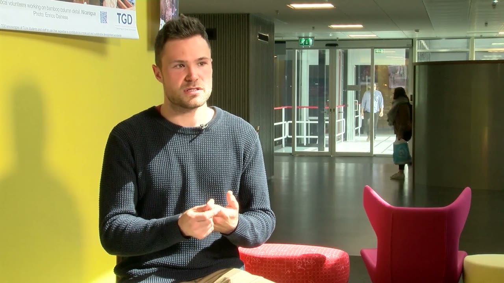
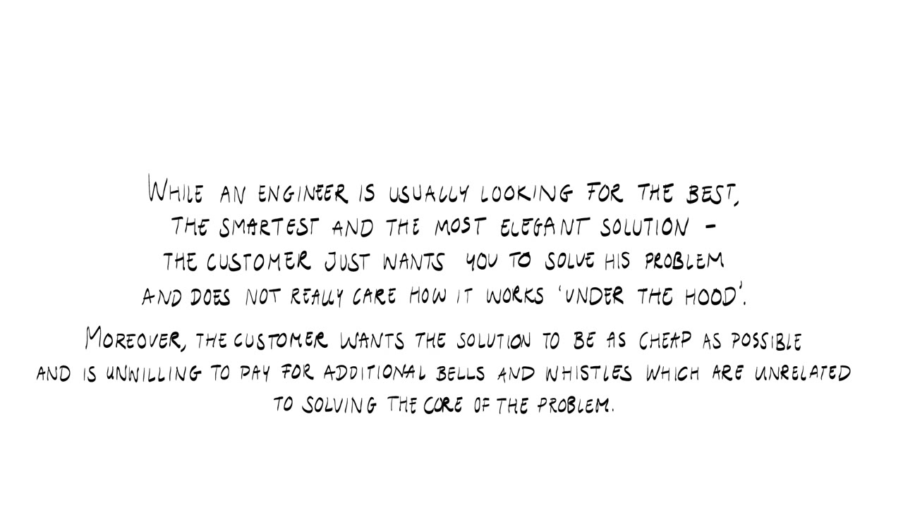
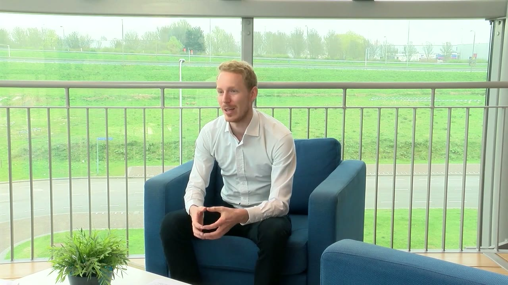
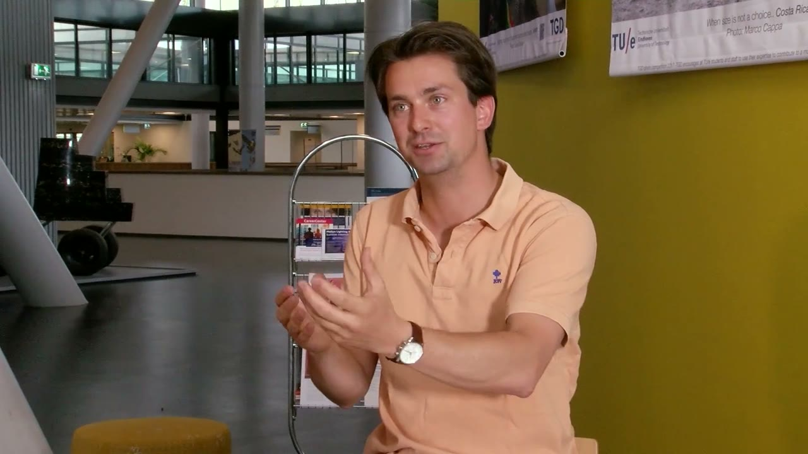
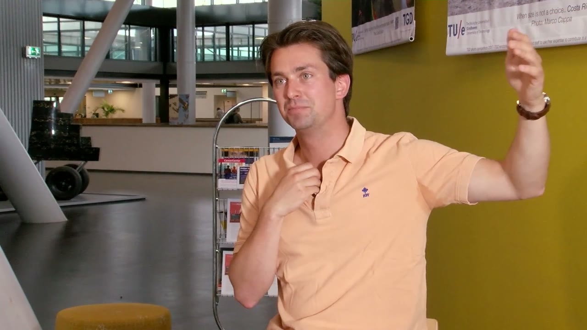
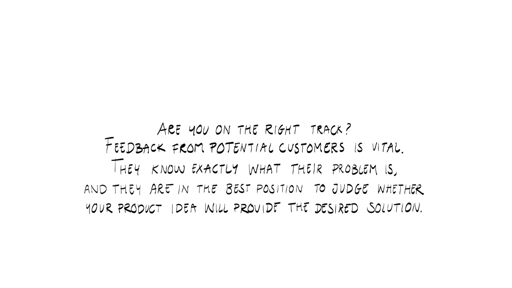
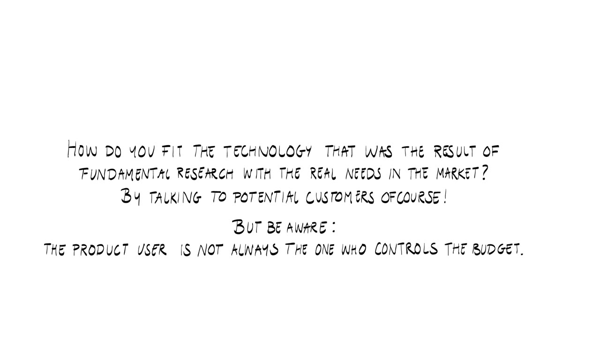
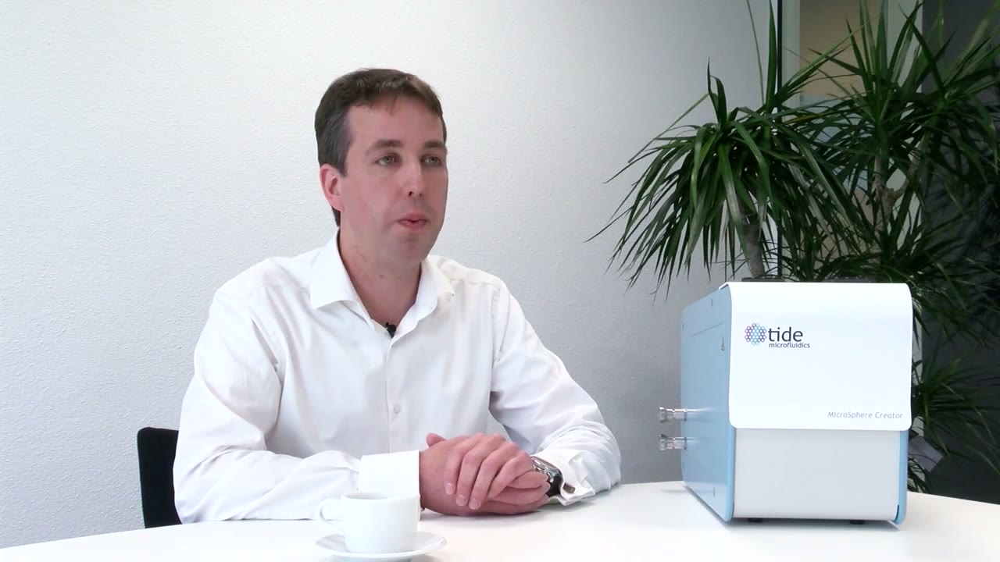

How the video works
This is the longest video in the series. A voice-over reads a short statement while it is written out on a white card, and then one of the entrepreneurs explains how that statement played out in their own company. The speakers are not named on screen. The title card lists only their companies, so these notes refer to each speaker by company.
- BitsensorTU Eindhoven. A security product that companies integrate into their applications.
- EventixTU Eindhoven. Ticketing and registration for events.
- NowiTU Delft. Sensors powered by existing Wi-Fi, 4G and GSM signals.
- SnocomTU Eindhoven. Snow compression machines for airports.
- Tide MicrofluidicsTU Twente. A product that grew out of fundamental research.
Bitsensor: fake it before you build it

Listen, then pivot
You need to listen to what your potential customers expect from your product and pivot your offering accordingly. For Bitsensor the pivot point was its visualizations. The product gave highly specific, highly technical output, and customers did not understand it. The team removed the detailed information and replaced it with high-level information. They had not thought they should do that. The customers decided it: they felt they understood the product better when it was simpler.
Check that the market is big enough
If your market is merely a niche, all your efforts may not pay off. The advice is to assess how big the problem is before you start. If it is a problem of "like one million or even less", why go through all the nights of work and the parties you miss to solve something tiny? Shoot down your bad ideas and keep going until you find a really great one, then start working on that.
Do not build before you have customers
When you do not have enough customers yet, even a prototype may be a big waste of time.
I think every engineer should fake it before they even build a product. So first you do the numbers, and then you build a fake product, and then you build a prototype.
The Bitsensor entrepreneur sees a lot of engineers build the prototype first, without knowing how big the business is or whether there are any customers at all. If nobody wants the prototype, all the time that went into it is wasted. Maybe just start with a PowerPoint. Working the other way round has a familiar result: engineers who say they wrote the best code and so many tests, for a feature that nobody uses and that gets thrown away.
Price on value, not on cost
The price of your product should not depend on your cost price. It must be related to the value the product creates for the customer.
Pricing security is hard, the entrepreneur says, because a company will pay less before it has been hacked than after it has been hacked and has seen the damage. Most smaller companies go bankrupt after a hack. Bitsensor looked at the prices of competing solutions. Then it quantified two of its own benefits: how much time a customer has to invest to integrate the product, and how easy the product is to use. The price came out of those numbers.

They also needed a scale that everybody understands: if the product is integrated into twice as many applications, Bitsensor should earn twice the revenue. People understand how many application instances they are running. They do not think in packets per second on their network. So the price is counted in application instances.
Eventix: one product, four markets


Segments need their own proposition
The general product offering can be more or less the same while each market segment is slightly different. That leads to different value propositions and different marketing and sales strategies.
Eventix splits its market into four segments: theater, business, festivals and sports. All four use the same basics of ticketing and registration. The company still separates them, for two reasons. Marketing and sales differ, since a festival needs a different approach than a business event. Some features also exist for one market only. Seat selection when ordering tickets matters for a theater and is irrelevant for a festival.
Upselling without annoying the customer
Besides the direct service you offer, you should explore options to upsell additional products. Make sure this does not conflict with your main offering, for instance by annoying customers and losing them.
Eventix has tested several ways of earning its revenue:
- third-party ads,
- a monthly subscription fee paid by the organizer,
- service fees,
- transaction fees,
- a price per ticket paid by the organizer instead of the visitor.
The team is also thinking about offering third-party products in the ticket shop. They call it the Ryanair model: when you buy a plane ticket you are offered insurance, hotels and suitcases from other companies. If those offers bring in enough revenue, that might become an option.
Still, an organizer can say: no, I don't want all of that junk in my ticket shop, I'd rather have the visitor pay a fee per ticket. Then that's fine too. That's the way we're doing it now.
How Eventix earns its money therefore depends on the organizer of the event.
Nowi: put a number on the pain
The customer does not care how it works


An engineer usually looks for the best, smartest and most elegant solution. The customer just wants the problem solved and does not really care how it works under the hood. The customer also wants it as cheap as possible and will not pay for bells and whistles that have nothing to do with the core of the problem.
The Nowi entrepreneur recognizes this from the feedback of the past year. If you come from TU Delft, you like elegant technological solutions. In the business world people do not care how you solve the problem, as long as you solve it and it is cheap. They speak a different language. The conclusion is that you have to do both: have a very good solution, and translate it into a business case that makes sense to them.


A problem you did not foresee can lead to a better product
What you envisioned as the solution might create an unforeseen problem, and pivoting to avoid it may lead to a much better solution.
Nowi now uses Wi-Fi, 4G and GSM signals, communication signals that already exist, as a power source for its sensors. At first the team built its own box that sent out radio frequency signals. That box disturbed existing signals a lot, which meant a ton of regulation problems, and regulation is something you cannot change. For a while the road looked like a dead end, because they would never be allowed to put those boxes everywhere. Then they saw that such boxes already exist. They are called Wi-Fi routers and telecom towers. Nowi pivoted to those.
Quantify the pain along the value chain
You need to quantify the pain the customer experiences, and for that you must talk to various people along the value chain in which your product will be used.
Nowi talked to many companies that do maintenance in buildings, to uncover how the value chain of building management works. A big part of it is companies that install and maintain equipment. From them Nowi learned that the batteries in a sensor have to be changed every 6 to 18 months on average, and that each change costs between 10 and 35 euros. At Schiphol Airport, with more than 100,000 sensors, one person is employed full time to walk around with a ladder and change batteries.
Once you know what the problem costs the customer, you can build a business case: you simply need to improve on that number. Nowi's proposition is that the battery change is not needed at all. Take a sensor that is used for 10 to 15 years. Every battery change adds to its cost of ownership, which can easily reach 400 or 500 euros over that lifetime, while the purchase price is maybe 40 or 50 euros. Remove the maintenance and the cost of ownership drops dramatically.
Sell the product, or sell the data?
There are two possibilities. You can simply sell the product, which is how most sensors are sold. That makes sense for a lot of companies, but the customer faces a big upfront investment: 5,000 or 10,000 sensors for a large office building at 40 or 50 euros each.

The other possibility is a subscription or lease model, a trend the entrepreneur describes as still at a very early stage. You offer the data, handle everything attached to it, and guarantee that the customer gets the data they need.
Actually nobody wants sensors. Sensors themselves are not interesting. They want the data that the sensors generate, because that's what is helping them control their buildings better.
The customer might pay two euros per room, for example, and receive all the data. This proposition is still new in that market, so Nowi is testing how much traction it gets and what people like or dislike about it.
Snocom: a sketch and a lot of feedback


Get confirmation before the prototype
Do not build your prototype until you have confirmation that this is exactly what the customer wants from your product.
The Snocom entrepreneur started in the airport market with a sketch of a machine that could take up all the snow from one runway. The idea seemed good, but the market had to confirm it. So the sketch went to Amsterdam Airport Schiphol, with the question whether it would help them. They had never heard of snow compression and found it interesting. They also asked practical questions. How does the machine get on and off the runway? Who steers it? The airport then offered a master thesis spot, and airports are still Snocom's focus.
The product can change a lot
Depending on the feedback from potential customers, your product could change significantly. The idea came from a challenge the entrepreneur had experienced personally. It was not a call for help from the market. Shown a possible solution, the airports said they had never thought of it and that it could work. Their feedback then changed the original runway sketch into a solution for the aprons, the area at the gate where passengers get on and off the plane.


Are you on the right track?


Potential customers know exactly what their problem is, so they are in the best position to judge whether your idea solves it. For the Snocom entrepreneur, market feedback on whether the idea is good is the most important thing an inventing engineer can get. It tells you whether you are doing a good job, and it guides you in making the product and the company better. The advice: once you have made your first sketch, go to the market straight away, get feedback, and if it is positive, file a patent.
A good technology is not yet a good product
The sketch shown to Schiphol contained a technology, compressing snow, and a product, a machine for runways.
The feedback they gave me was that the technology was good, but the product I envisioned for the runways was shit.
The airport suggested using the technology in another part of the airport, such as the gate area. That shifted Snocom's focus to where the problem is biggest. The feedback shaped the product.
Ask what the product is worth to the customer
When a customer tells you your solution is good, try to understand why it is good for them. Their answer tells you what the value proposition is from their side. To make a strong business case, ask the customer how the product helps and in which aspects, and then quantify that value. Sometimes it is quantitative and you can put a euro sign on it. Sometimes it is qualitative and you cannot, but it still helps you sell.
Once you know the value you offer, you can determine what the product could cost the customer. Then you calculate what it costs you to make it. The difference should be larger than zero.
Being better is leverage on price
If your product is significantly better than the competition, you can use that in your pricing. The Snocom entrepreneur looks at price from two perspectives. The most important one is the value you offer to your customers. The other is the current technologies you compete with, which have a price tag of their own. If your value is far higher than theirs, you can put that difference into your price and ask more. But if you ask ten times more, people start to question why. The price has to stay in balance with the value you offer, and it has to be realistic.
The first customer leads to the next ones
After you have found your first customer, look for others with the same problem and the same need. Your first customer knows the market well and knows your other customers. Airports know each other very well because they share the same challenges. They meet every year, for example, to discuss the operational challenges of snow removal. That made it easy to get in touch with other airports. At a very early stage the second and third sketch, which had come out of the Schiphol feedback, went to other airports with the same question. With all of that feedback together you arrive at a product that works everywhere.
Tide Microfluidics: from research to a market need


How do you fit a technology that came out of fundamental research to real needs in the market? By talking to potential customers. The card adds a warning: the person who uses the product is not always the person who controls the budget.
For Tide Microfluidics it was a combination of fundamental research and a clear market need, and the two were matched by talking to people in the field. When the team had its first prototype, it invited cardiologists and veterinary researchers and gave a live demonstration. The team could see how enthusiastic these people were. The visitors saw what was being developed, and the team learned how the product could be used in clinical practice. That information helped them develop the product further.


Terms to know
- Pivot
- Changing your offering in response to what customers expect or to a problem you did not foresee. Bitsensor simplified its visualizations, Nowi chose existing Wi-Fi and telecom signals over its own transmitter, and Snocom moved from runways to aprons.
- Market segment
- A part of your market that gets the same general product but needs its own value proposition, features, marketing and sales. Eventix has four: theater, business, festivals and sports.
- Upselling
- Selling additional products on top of the direct service you offer. It must not conflict with the main offering.
- Ryanair model
- Eventix's name for offering third-party products during checkout, the way an airline offers insurance, hotels and suitcases when you buy a ticket.
- Cost of ownership
- What a product costs over its whole lifetime, maintenance included. Nowi's example is a sensor bought for 40 or 50 euros that costs 400 or 500 euros over 10 to 15 years because of battery changes.
- Business case
- The calculation that shows the customer what your solution is worth to them. It starts from what the problem costs them now.
- Value proposition
- How your product helps the customer and what that is worth to them. Part of it can be expressed in euros and part of it cannot.